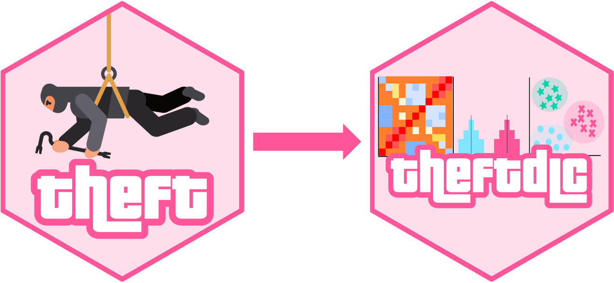
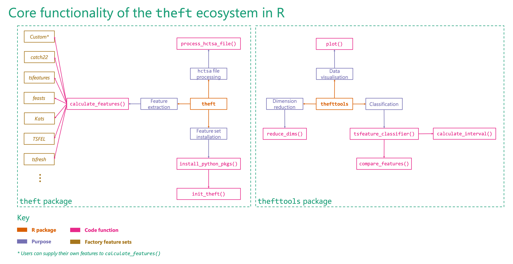

Tools for Handling Extraction of Features from Time series (theft)
Installation
You can install the stable version of theft from CRAN:
install.packages("theft")You can install the development version of theft from GitHub using the following:
devtools::install_github("hendersontrent/theft")Please also check out our paper Feature-Based Time-Series Analysis in R using the theft Package which discusses the motivation and theoretical underpinnings of theft and walks through all of its functionality using the Bonn EEG dataset — a well-studied neuroscience dataset.
General purpose
theft is a software package for R that facilitates user-friendly access to a consistent interface for the extraction of time-series features. The package provides a single point of access to time-series features from a range of existing R and Python packages as well as enabling users to calculate their own features. The packages which theft ‘steals’ features from currently are:
-
catch22 (R; see
Rcatch22for the native implementation on CRAN) - feasts (R)
- tsfeatures (R)
- Kats (Python)
- tsfresh (Python)
- TSFEL (Python)
Users can also calculate their own individual features or sets of features too!
Note that Kats, tsfresh and TSFEL are Python packages. theft has built-in functionality for helping you install these libraries—all you need to do is install Python on your machine (preferably Python >=3.10). If you wish to access the Python feature sets, please run ?install_python_pkgs in R after downloading theft or consult the vignette in the package for more information. For a comprehensive comparison of these six feature sets across a range of domains (including computation speed, within-set feature composition, and between-set feature correlations), please refer to the paper An Empirical Evaluation of Time-Series Feature Sets.
As of v0.6.1, users can also supply their own features to theft (see the vignette for more information)!
Package extensibility
The companion package theftdlc (‘theft downloadable content’—just like you get DLCs and expansions for video games) contains an extensive suite of functions for analysing, interpreting, and visualising time-series features calculated from theft. Collectively, these packages are referred to as the ‘theft ecosystem’.

A high-level overview of how the theft ecosystem for R is typically accessed by users is shown below. Note that prior to v0.6.1 of, many of the theftdlc functions were contained in theft but under other names. To ensure the theft ecosystem is as user-friendly as possible and can scale to meet future demands, theft has been refactored to just perform feature extraction, while theftdlc handles all the processing, analysis, and visualisation of the extracted features.

Many more functions and options for customisation are available within the packages and users are encouraged to explore the vignettes and helper files for more information.
Quick tour
theft and theftdlc combine to create an intuitive and efficient workflow consistent with the broader tidyverts collection of packages for tidy time-series analysis. Here is a single code chunk that calculates features for a tsibble (tidy temporal data frame) of some simulated time series processes, including Gaussian noise, AR(1), ARMA(1,1), MA(1), noisy sinusoid, and a random walk. simData comes with theft. We’ll just use the catch22 feature set and a custom set of mean and standard deviation for now. Using tidy principles and pipes, we can, in the same code chunk, feed the calculated features straight into theftdlc’s project function to project the 24-dimensional feature space into an interpretable two-dimensional space using principal components analysis:
library(dplyr)
library(theft)
library(theftdlc)
calculate_features(data = theft::simData,
feature_set = "catch22",
features = list("mean" = mean, "sd" = sd)) %>%
project(norm_method = "RobustSigmoid",
unit_int = TRUE,
low_dim_method = "PCA") %>%
plot()
In that example, calculate_features comes from theft, while project and the plot generic come from theftdlc.
Similarly, we can perform time-series classification using a similar workflow to compare the performance of catch22 against our custom set of the first two moments of the distribution:
calculate_features(data = theft::simData,
feature_set = "catch22",
features = list("mean" = mean, "sd" = sd)) %>%
classify(by_set = TRUE,
n_resamples = 10,
use_null = TRUE) %>%
compare_features(by_set = TRUE,
hypothesis = "pairwise") %>%
head() hypothesis feature_set_a feature_set_b metric set_a_mean
1 All features != catch22 All features catch22 accuracy 0.8022222
2 All features != User All features User accuracy 0.8022222
3 catch22 != User catch22 User accuracy 0.7400000
set_b_mean t_statistic p.value
1 0.7400000 2.35154855 0.04319536
2 0.8044444 -0.03932757 0.96948780
3 0.8044444 -1.23794041 0.24705786In this example, classify and compare_features come from theftdlc.
We can also easily see how each set performs relative to an empirical null distribution (i.e., how much better does each set do than we would expect due to chance?):
calculate_features(data = theft::simData,
feature_set = "catch22",
features = list("mean" = mean, "sd" = sd)) %>%
classify(by_set = TRUE,
n_resamples = 10,
use_null = TRUE) %>%
compare_features(by_set = TRUE,
hypothesis = "null") %>%
head() hypothesis feature_set metric set_mean null_mean
1 All features != own null All features accuracy 0.8022222 0.1355556
2 User != own null User accuracy 0.8044444 0.1511111
3 catch22 != own null catch22 accuracy 0.7400000 0.1222222
t_statistic p.value
1 6.826807 7.670466e-05
2 5.882092 2.342183e-04
3 6.879652 7.229353e-05Please see the vignette for more information and the full functionality of both packages.
Citation
If you use theft or theftdlc in your own work, please cite both the paper:
T. Henderson and Ben D. Fulcher. Feature-Based Time-Series Analysis in R using the theft Package. arXiv, (2022).
and the software:
To cite package 'theft' in publications use:
Henderson T (2025). _theft: Tools for Handling Extraction of Features
from Time Series_. R package version 0.8.1,
<https://hendersontrent.github.io/theft/>.
A BibTeX entry for LaTeX users is
@Manual{,
title = {theft: Tools for Handling Extraction of Features from Time Series},
author = {Trent Henderson},
year = {2025},
note = {R package version 0.8.1},
url = {https://hendersontrent.github.io/theft/},
}
To cite package 'theftdlc' in publications use:
Henderson T (2024). _theftdlc: Analyse and Interpret Time Series
Features_. R package version 0.1.2,
<https://CRAN.R-project.org/package=theftdlc>.
A BibTeX entry for LaTeX users is
@Manual{,
title = {theftdlc: Analyse and Interpret Time Series Features},
author = {Trent Henderson},
year = {2024},
note = {R package version 0.1.2},
url = {https://CRAN.R-project.org/package=theftdlc},
}Acknowledgements
Big thanks to Joshua Moore for his assistance in solving issues with the Python side of things, including the correct specification of dependencies for the install_python_pkgs function.